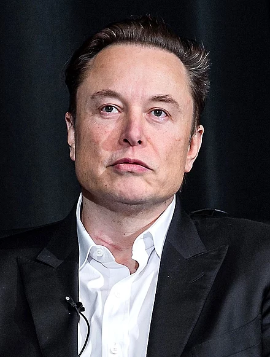
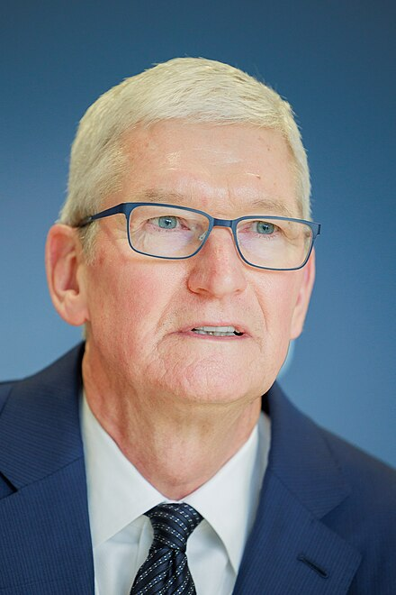
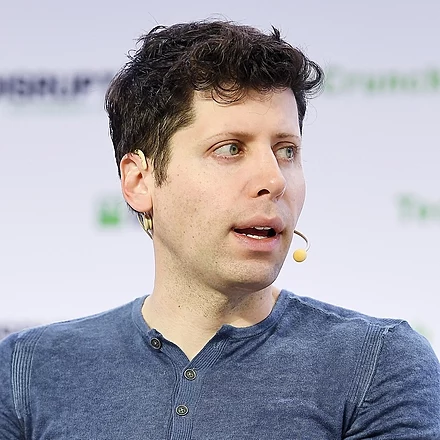
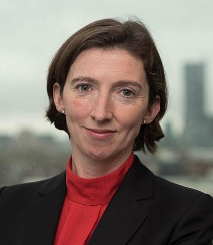
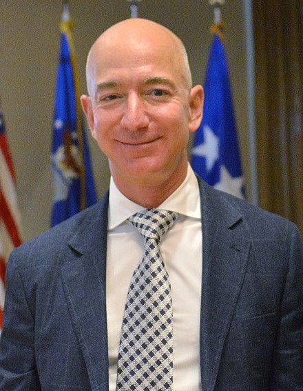
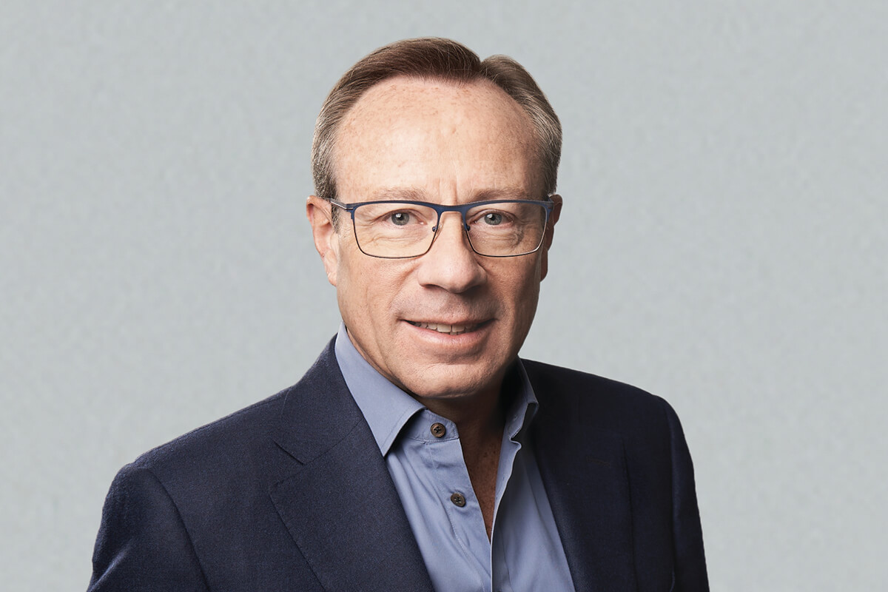
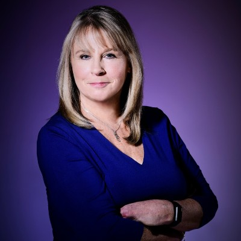

At this year's TechCon there will be eight speakers who will deliver speeches on various topics. Here you can find more details about each of the speakers, their companies, and the topics of their speech.
Elon Musk

Bio
Musk has vast experience in the technological sector: he is the CEO of Tesla, the founder and CEO of SpaceX, and a co-founder of OpenAI, the company responsible for the development of ChatGPT. In October last year, Musk expanded his portfolio by acquiring Twitter, now renamed X.
Tesla
Tesla are an electric car manufacturer which was set up in 2003, and Musk became CEO in 2008. Tesla have also been a leading force in the development of self-driving vehicles. However, while they have successfully developed self-driving vehicles, they are not completely autonomous and are designed to be driven by people who are ready to take over control at any point.
Speech Topic
Elon Musk's speech will be an update on Tesla's development of autonomous cars. While members of the public have posted videos online of their Tesla cars successfully driving themselves without any human input, there are also contrasting videos of self-driving Teslas having accidents and these cars are far from the finished autonomous car that everyone is waiting for.
Tim Cook

Bio
Cook has spent the majority of his working life at Apple, having joined in 1998, however he previously worked for IBM for 12 years. He rose through the ranks at Apple under Steve Jobs and took over control of Apple's day-to-day decisions when Jobs was away on medical leave. Cook became CEO of Apple following Jobs' resignation shortly before his death.
Apple
Apple are one of the largest tech companies in the world. They have been producing PCs since the 1970s and grew massively following the release of their innovative smartphone, the iPhone. Apple have released new models of iPhone every year since, and this year is no different, with the iPhone 15 launching in September.
Speech Topic
In his speech, Cook will be breaking down yet another iPhone model - the brand new iPhone 15 Pro Max. This phone has a 5x zoom camera, compared to the iPhone 15 Pro's 3x zoom, a larger screen, and up to 6 hours longer battery life.
Sam Altman

Bio
Altman has been CEO of OpenAi since 2019, however he was recently fired and then rehired by the company following an overhaul of the Board of Directors. Previously, Altman was the President of the Y Combinator Group, which owned companies such as Airbnb and Dropbox. He is also known for temporarily being the CEO of Reddit for eight days.
OpenAI
OpenAI are the company responsible for the development of ChatGPT, the rapidly growing AI chatbot which shot into the spotlight late last year. ChatGPT now has a free version, available to everyone, and a premium version which includes new features. This allows OpenAI to test their new features with a smaller audience to spot any errors before they are widely available.
Speech Topic
Altman's topic is 'The Rise of AI and GPTs'. In this speech he will discuss the development of ChatGPT and how it rose to such fame, how it has impacted various sectors, such as education, and the possible dangers of AI.
Lindy Cameron OBE

Bio
Cameron has served as a civil servant for the vast majority of her professional life. She was the head of the DFID offices in both Iraq and Afghanistan, and was awarded an OBE in 2004 for services to Iraq. Cameron also worked in the Foreign Office, before returning to DFID. She became the CEO of NCSC in 2020. In last year's Tel Aviv Cyber Week, she named ransomware the greatest cyber security threat.
National Cyber Security Centre
NCSC is the national authority over cyber security, and works as part of the larger governmental organisation, GCHQ. It was formed in 2016 and replaced various other cyber security organisations within the government.
Speech Topic
Cameron's speech will focus on cyber security improvements in the UK, potential threats in the future, in particular, the growth of AI, and measures which will be implemented in the future to combat these threats.
Jeff Bezos

Bio
Bezos is the former President and CEO of Amazon, and current executive chairman. Bezos was also formerly the richest man in the world with a net worth in excess of $200bn, and currently stading around $170bn.
Amazon
When Bezos and his former wife, MacKenzie Scott, founded Amazon in 1994, it was orginially an online bookstore. However, in recent years, Amazon have expanded massively, and are most known for being a delivery service and provider of other services, such as TV streaming, through Amazon Prime.
Speech Topic
Bezos will be giving his speech on AWS - Amazon Web Services. In this speech, he will explain what AWS is, what it does, and how it can improve everyone's day-to-day life.
Mark Zuckerberg
Bio
Zuckerberg coded his website, Facebook, in the space of a month in 2004. It was initially a social media network for people at Harvard University, but he spread it to other American universities. Zuckerberg rejected offers from big businesses to buy Facebook, stating that money was not important for him and his friends who had helped him set Facebook up.
Meta
Meta is the company formerly known as Facebook, which owns the popular social media sites Facebook, Instagram, and WhatsApp. The rebrand took place in 2021 and emphasised a growing focus on the idea of the metaverse.
Speech Topic
Zuckerberg will be explaining exactly what is the metaverse, what Meta's plans are regarding this vision of a metaverse, and how the metaverse is constantly evolving.
Philip Jansen

Bio
Jansen has been the CEO of BT since 2018 after stepping down as the CEO of Worldpay. In July this year, Jansen announced he will be stepping down from his position at BT within a year, and his speech at this year's TechCon will be his last speech as BT CEO.
BT
BT, formerly British Telecom, is a telecommunications company which was originally founded in 1846 as the Electric Telegraph Company. The company has evolved with technology and maintained its presence in the UK market under various different guises, including operating as part of the Royal Mail Post Office.
Speech Topic
Jansen's speech will be about BT's plans to further expand their full fibre broadband to allow more people access to superfast Wi-Fi. Accoridng to Ofcom, as of May this year, only 52% of UK households had access to full fibre broadband. BT hope to grow this number massively and increase their share of this market.
Debbie Forster MBE

Bio
Forster is the CEO and co-founder of the Tech Talent Charter, which promotes inclusivity and diversity in the UK tech sector. Forster has received much recognition for her work: in 2017 she was awarded an MBE for services to digital technology and tech development, and in 2019 she was voted the most influential woman in IT by Computer Weekly and Diversity Leader of the Year by the Women in IT awards.
Tech Talent Charter
The Tech Talent Charter works to both fill the talent shortage in the sector, as well as combating the lack of diversity. According to Diversity in Tech, only 15% of tech workers come from BAME backgrounds, and only 19% are women. In the overall UK workforce - excluding the tech sector - this figure is 49%. The Tech Talent Charter aims to bring the Tech Sector into line with the national average.
Speech Topic
Forster will be giving a speech on the current state of diversity and inclusion in the tech sector, and what the Tech Talent Charter are doing to increase diversity.